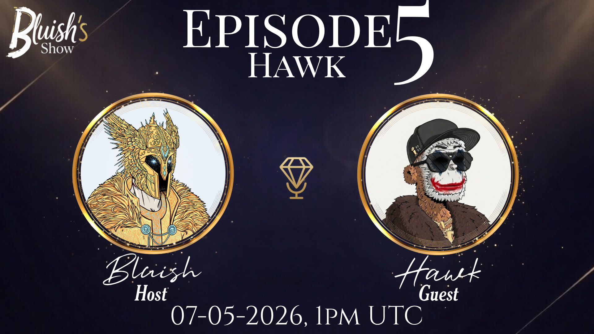

Hawk is one of those personalities you don’t really forget. Part character, part chaos, part genuinely thoughtful — in this episode we talk about where that energy comes from, his background in the art world, how he found NFTs, and why humor and consistency ended up being his biggest edge.
Listen Now on SpotifyHawk comes from a background in fine art, public installations, and managing creative teams — long before crypto. After years working in museums, studios, and large-scale art projects, he eventually found NFTs through a friend and never really left.
What makes him stand out isn’t just what he does — it’s how he shows up. On the timeline and in Spaces, Hawk leans fully into humor, playing a slightly exaggerated version of himself. But behind that is someone who genuinely values community, consistency, and real connections.
Whether he’s making AI memes, hosting shows, or just messing around with friends, there’s always a balance between chaos and intention — and that’s what makes him interesting.
"I play a character… but it’s still me, just turned up."
"Consistency plus humor — that’s the formula."
"Nothing I do is meant to hurt people. It’s all part of the fun."
"You’ve got to show up. Opportunities come from just being there."
"Online is one thing, but the real connections — those are everything."
"We’re all just kind of figuring it out… might as well enjoy it."